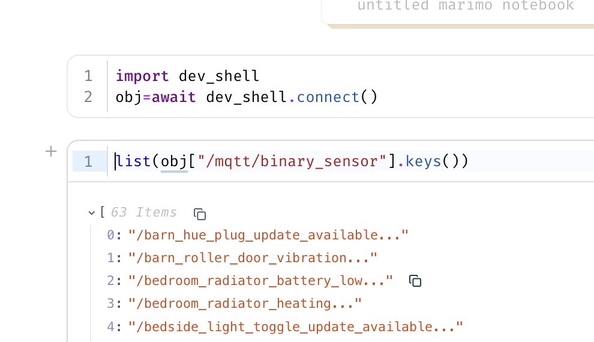

Alternative Integration¶
Other ways of using Home Assistant REPL without using the supplied shell.
Using homeassistant_repl from Plain Python¶
The api mode REPL above is just a thin wrapper around homeassistant_repl.connect() - the same call works from a one-off script, a notebook, or an interactive python -m asyncio session (the standard library's REPL that supports top-level await, unlike plain python), with no dependency on the ha-repl executable at all.
Install the package first (pip install homeassistant-repl, or uv add homeassistant-repl in a project) - the importable package is named homeassistant_repl.
$ python -m asyncio
>>> import homeassistant_repl
>>> obj = await homeassistant_repl.connect() # reads $HASS_SERVER/$HASS_TOKEN, same as the CLI
>>> obj["/rflink/binary_sensor/hall_pir"].state
'off'
>>> [e.entity_id for e in obj.find(domain="light")]
['light.kitchen_lights', 'light.shed']
Or pass the URL/token explicitly rather than via environment variables, and use it in a script with asyncio.run:
import asyncio
import homeassistant_repl
async def main() -> None:
obj = await homeassistant_repl.connect(
url="http://homeassistant.local:8123", token="..."
)
print(obj["/rflink/binary_sensor/hall_pir"].state)
asyncio.run(main())
obj behaves identically to the one bound in the REPL - everything under The Object Tree below applies. connect() only gets you api mode (read-only, no hass); live mode's live object tree requires the ha_repl_server HACS component and talks to it over the same underlying Client, but isn't exposed as a standalone importable helper.
connect() reads the same config.toml as the CLI, so a server can be given by name - await homeassistant_repl.connect("house") - and the default server is used when no argument and no HASS_SERVER is given. Plugins belong to the shells, and are not run by connect().
By default the cached snapshot is reused for 30 seconds (ttl= to change that) and the websocket connection is left open for the life of the process; call await obj.cache.refresh() for a fresh snapshot on demand, or await obj.cache.client.close() when you're done with it if that matters for your script.
iPython Example¶
Marimo Example¶

Web Based Terminal¶
ttyd is available easily via Mise, Homebrew or opkg. The http port will be logged at startup. It can be a dangerous security hole if not carefully used.
Recent versions of ttyd are read-only unless started with --writable, and have no login unless given --credential user:password. Anyone who can reach the port can use the shell, and in live mode that means running any Python inside Home Assistant.
In a Docker Container¶
This example image serves the live shell on port 7681, for where installing ttyd and uv directly isn't convenient. It hasn't been widely tested, so treat it as a starting point.
FROM ghcr.io/astral-sh/uv:python3.14-bookworm-slim
RUN apt-get update \
&& apt-get install -y --no-install-recommends ttyd \
&& rm -rf /var/lib/apt/lists/*
# installs the ha-repl command into /usr/local/bin
ENV UV_TOOL_BIN_DIR=/usr/local/bin
RUN uv tool install homeassistant-repl
EXPOSE 7681
CMD ["ttyd", "--writable", "--port", "7681", "ha-repl", "live"]
Build it, then run it with the address and token of the Home Assistant to connect to, published only on the local machine:
docker build -t ha-repl-web .
docker run --rm -p 127.0.0.1:7681:7681 \
-e HASS_SERVER=http://homeassistant.local:8123 \
-e HASS_TOKEN=<long lived access token> \
ha-repl-web
The shell is then at http://localhost:7681. To set a login, or run api mode instead, give the whole command at the end of docker run, for example ttyd --writable --credential me:secret ha-repl live.
From a Home Assistant Terminal Add-on¶
On Home Assistant OS there is no uv, or recent enough Python, on the host - but a terminal add-on runs in its own container, where both can be added. This gives a shell in the browser, from the Home Assistant sidebar, with nothing to install on another machine.
With the Advanced SSH & Web Terminal add-on, add uv to the packages it installs each time it starts, in the add-on's configuration:
Restart the add-on, open its terminal, and run the shell - uv downloads a suitable Python of its own:
No HASS_SERVER or HASS_TOKEN is needed if the add-on provides a SUPERVISOR_TOKEN, since ha-repl then connects through the Supervisor. Otherwise set both, as for any other machine.
uv keeps its downloads in the home directory, which the add-on may not keep between restarts. To avoid downloading Python and the packages again each time, point UV_CACHE_DIR and UV_PYTHON_INSTALL_DIR at a directory that is kept, such as one under /config.
Studio Code Server¶
The Studio Code Server add-on also works, from its built-in terminal, with two differences. It is based on Debian, which has no uv package to add to the configuration, so install uv with its own installer:
Its Python is also older than ha-repl needs, so ask uv for a newer one when running the shell:
To have uv there each time the add-on starts, put the install command in the add-on's init_commands configuration.